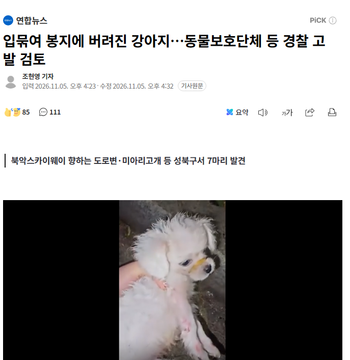

서울 성북구 북악스카이웨이로 향하는 도로변에서 학대를 받은 것으로 의심되는 강아지 7마리가 발견돼 동물보호단체 등이 고발을 검토하고 있다.
5일 연합뉴스 취재를 종합하면 소셜미디어(SNS) 인스타그램 이용자 정모 씨는 2일 밤 9시 40분께 반려견과 북악스카이웨이로 향하는 도로변을 산책하던 중 입에 고무줄이 묶인 채 쓰레기와 함께 검은색 비닐봉지에 넣어 버려진 하얀색 강아지를 발견했다.
다음 날인 3일에는 다른 주민이 미아리고개 풀숲에서 가방 안에 담긴 또 다른 강아지 1마리를 발견했다.
정씨와 주민들은 버려진 강아지가 더 있을 것으로 보고 주변을 수색했고 전날인 4일 성북동 한 풀숲에서 강아지 5마리를 추가로 발견했다. 이 강아지들은 발견 당시 테이프로 입이 묶이거나 보자기에 싸여 있었다고 정씨는 전했다.
https://n.news.naver.com/article/001/0016424742
7마리??

동물보호단체에서 버렸다는거임???